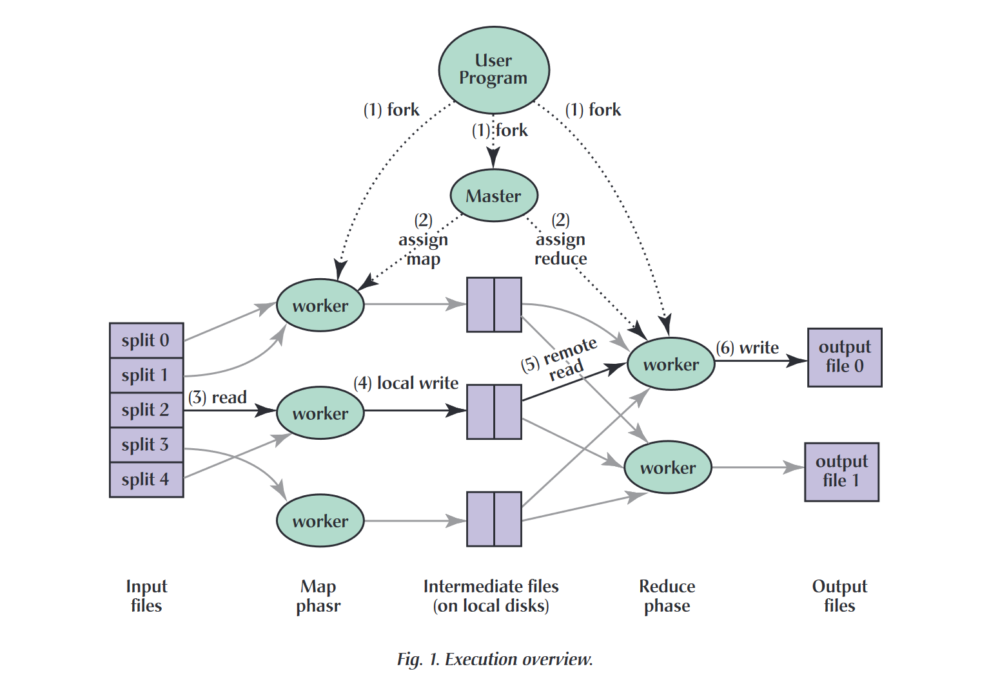

论文总结：MapReduce: Simplified Data Processing on Large Clusters

背景与问题
- Google 在处理大规模数据（如网页抓取、日志分析等）时，需要分布式计算技术以高效完成任务。
- 传统分布式系统开发复杂，需要手动处理并行化、数据分布和故障恢复，导致代码繁琐且难以维护。
- 为解决这些问题，作者提出了 MapReduce 模型，一种简化并行计算的抽象。
主要贡献
- 编程模型：
- MapReduce 基于两个核心操作：
map: 负责从输入中生成中间键值对。reduce: 接收共享同一键的所有值，并生成最终结果。
- 用户只需实现
map 和 reduce 函数，其余复杂操作由系统处理。
- 高性能实现：
- 采用廉价商品硬件（集群中的数千台 PC）。
- 提供自动化的任务分配、数据本地化和容错机制。
- 广泛适用性：
- 模型简单，非分布式系统开发人员也能轻松上手。
- 适用于数据处理、机器学习、排序等多种任务。
模型细节

- 工作流程：
- 输入数据分为多个片段（split），每片大小通常为 16-64 MB。
- MapReduce 调度系统负责将任务分配给集群中的计算节点。
- ‘Map’ 阶段生成中间键值对；‘Reduce’ 阶段整合这些对。
- 最终结果输出到多个文件中。
- 容错机制：
- 如果某个节点失败，未完成的任务会重新分配给其他节点。
- 已完成的 ‘map’ 任务需要重新执行，因为中间结果存储在本地磁盘上。
- 系统通过任务备份机制解决节点性能瓶颈问题。
- 优化策略：
- 数据本地化：尽量在存储数据的节点上执行任务以节省网络带宽。
- 任务分片（M 和 R 值）：将任务切分为小块以提高并行度和容错能力。
性能评估
- 实验设置：
- 集群规模：1800 台机器，每台配备双核 CPU、4GB 内存和千兆以太网。
- 测试任务：1TB 数据的模式匹配和排序。
- 实验结果：
- 模式匹配任务：
- 数据扫描速度峰值达 30 GB/s。
- 完成时间约为 150 秒，其中 1 分钟为启动开销。
- 排序任务：
- 输入速率峰值 13 GB/s，受限于中间数据写入磁盘的开销。
- 备份机制启用后，执行时间缩短 44%。
应用案例
- Google 内部使用：
- 搜索引擎索引的构建。
- 数据挖掘与统计分析（如 Google Zeitgeist 和 Google Trends）。
- 大规模机器学习和图处理任务。
- 规模增长：
- 从 2003 年到 2006 年，MapReduce 的应用从数百扩展到数千个程序，每天处理超过 20PB 数据。
主要优势
- 易用性：对开发者友好，隐藏了分布式系统的复杂性。
- 扩展性：设计适配大规模集群，轻松处理数十 PB 数据。
- 可靠性：自动处理节点故障和任务延迟问题。
- 效率：数据本地化和任务备份机制减少了网络和计算开销。
局限性与未来工作
- 受限于模型的简单性，无法直接处理高度复杂的计算需求。
- 后续工作可能包括支持更多的计算模型（如迭代计算）以及提升资源利用率的优化。
总结
- MapReduce 通过限制编程模型简化了并行和分布式计算。
- 其实现高效可靠，适用于多种实际数据处理场景。
- MapReduce 已成为 Google 内部大规模数据处理的核心工具，并对分布式计算的发展产生了深远影响。